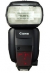

器材库 > 闪光灯 > Speedlite 600EX-RT

详细规格
发布日期
2012-03-02
厂家推荐价格
65,000.00 （日元）
兼容相机
所有型号EOS相机
闪光指数
60（ISO 100, m）
闪光涵盖范围
20mm - 200mm（使用广角散光板时约14mm）
闪光次数
约100~700次
回电时间
约0.1~5.5秒
闪光曝光控制
E-TTL II 自动闪光
无线闪光
光学脉冲传输方式和无线电传输方式
其他特点
可旋转角度向上约90°、左右约180°、向下约7°；防水滴防尘
附件
浓淡2种橙色滤镜
电池
4节AA碱性电池
尺寸
79.7×142.9×125.4mm
重量
425g
redwashroom2014-05-09 20:114.25 分
操作性 4.50功能性 4.50美观性 4.50趣味性 4.00耐用性 4.50性价比 3.50
风风点点2012-12-15 09:354.5 分
操作性 4.50功能性 4.50美观性 5.00趣味性 4.50耐用性 4.50性价比 4.00
nazgu12012-05-17 11:074.25 分
操作性 4.50功能性 4.50美观性 4.50趣味性 4.50耐用性 4.50性价比 3.00
Z号巡洋舰2012-03-03 09:194.83 分
操作性 5.00功能性 5.00美观性 4.50趣味性 5.00耐用性 5.00性价比 4.50
产品图 / 样片
SPEEDLITE 600EX-RT